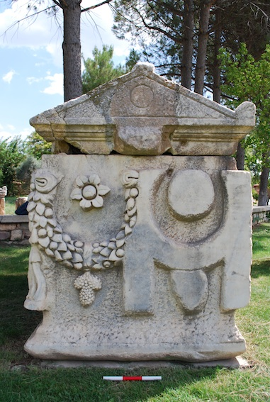

Towards a conceptual model for the domain of sculpture
For the next two years, I'll be collaborating with the Art of Making project. The project investigates the processes involved in the carving of stone during the Roman period. In particular, it aims to analyze them using the insights and understanding Peter Rockwell (son of Norman Rockwell) developed during his lifelong experience as a sculptor. Eventually, we will present these results through a freely accessible online digital resource that guides users through examples of stone carving. In this post, I just wanted to report on the very first discussions I had with the sculpture and art scholars I'm working with for the purpose of creating a shared model for this domain.
The project started this July. It is based at King's College London and is funded by the Leverhulme Trust. I'm more involved with the digital aspects of the project, and as usual, one of the first steps in building a digital resource (in particular, a database-backed digital resource) is the construction of a conceptual model that can represent the main types of things being dealt with.
In other words, it is fundamental to identify what our database and web application should 'talk about.' Later on, this model can be refined and extended to become an abstract template of the data-manipulation tasks the software application must be capable of supporting (e.g., entering data into the system, searching for it, and visualizing it).
Here's a nice example of the sculptures (a sarcophagus from Aphrodisias) that constitute our 'source' materials:

What are the key entities in the sculpture domain?
To this end, a few weeks ago we had a very productive brainstorming session aimed at fleshing out the main items of interest in the world of sculpture. This is a very first step toward the construction of a formal model for this domain. Nonetheless, I think we have already managed to pin down the key elements we're going to be dealing with over the next two years.
Here's a list of the main objects we identified:
- People, such as craftsmen, etc.
- Sculptures (of various kinds)
- Materials
- Tools
- Generic processes that are part of a sculpting project, such as quarrying and transport
- More specific methods being used within a particular process, e.g., carving styles or approaches to quarrying
- Traditions, conceptualizations of the 'way of doing things' that, in turn, can inspire the way methods and processes are carried out today
We encoded the results of our discussions in a mind map for better readability and also to use a technology that would make it easier to share our findings later on. I've added it below (in case the interactive image doesn't work, you can find it here too).
Fleshing out the model a bit more
After a few weeks of work, we did a reiteration of the conceptual map above. The good news was that it soon became evident that we got it quite right on the first round—that is, we didn't really feel the need to add or remove anything from the map.
On the other hand, we thought we should try to add some relations (i.e., links, arcs) among the concepts (i.e., bubbles) previously identified to characterize their semantics a bit more. I had a go at adding some relations first, and here's the result:
I should specify that I have no knowledge whatsoever of the domain of sculpture, so the stuff I added to the map came entirely from the (limited) research I've been doing on the subject (on and off) over the past few weeks.
At the same time, Will and Ben (the art historians I'm collaborating with) also worked independently on fleshing out the mind map with more relations. Needless to say, what they came up with is way more dense and intricate than what I could have ever imagined! This is probably not surprising, as one would expect to see a significant difference between a non-expert's representation of a subject domain and one created by experts. Still, it was interesting to see it happening with my own eyes! Here it is:
The next step will be trying to reduce the (natural) complexity of the portion of the world we are representing to a more manageable size, then formalize it and start building our database based on that. Stay tuned for more!